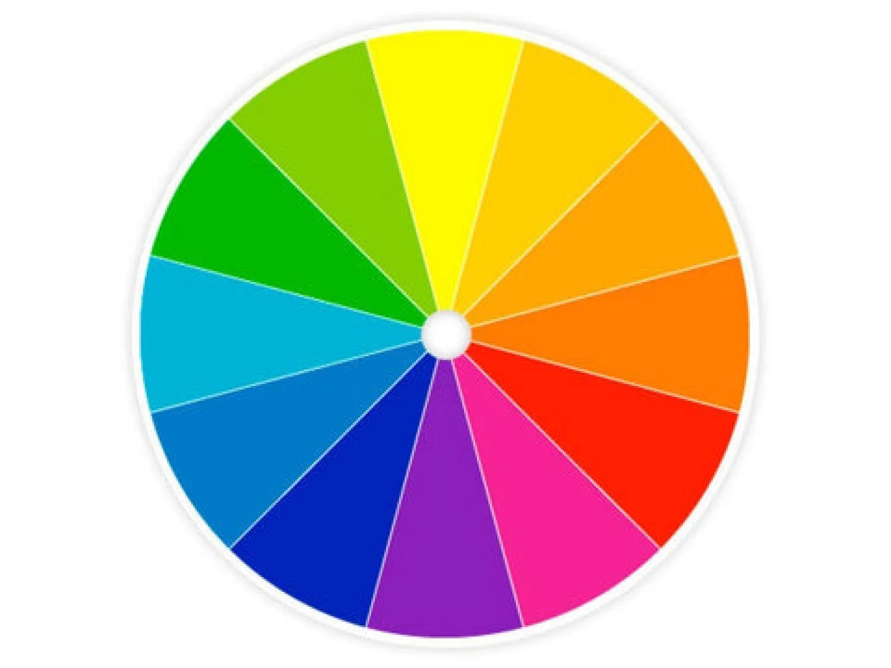

Wat zijn kleurmodellen?
Een kleurmodel is een manier om kleuren digitaal te beschrijven. Twee bekende kleurmodellen zijn RGB en CMYK.
RGB
RGB staat voor Red, Green en Blue. Dit betekent rood, groen en blauw. Schermen gebruiken RGB om kleuren weer te geven.
Door rood, groen en blauw in verschillende hoeveelheden te combineren, kunnen veel verschillende kleuren ontstaan.

CMYK
CMYK staat voor Cyan, Magenta, Yellow en Key (zwart). Dit kleurmodel wordt vooral gebruikt bij printers.
Video
Ik heb een video over kleurmodellen gekozen omdat kleuren op een scherm makkelijker te begrijpen zijn wanneer je ziet hoe rood, groen en blauw samen kleuren kunnen maken.